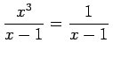
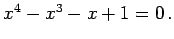
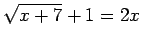
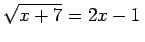
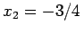

Inhalt Index DeskTop Bronstein

 Arithmetik Algebraische und transzendente Gleichungen Umformung algebraischer Gleichungen auf die Normalform
Arithmetik Algebraische und transzendente Gleichungen Umformung algebraischer Gleichungen auf die Normalform


Nach der Umformung einer algebraischen Gleichung auf die Normalform (1.145) kann es vorkommen, daß P(x) =0 Lösungen besitzt, die keine Lösungen der Ausgangsgleichung sind. Daher ist eine Probe notwendig: Durch Einsetzen der Wurzeln von P(x)=0 in die Ausgangsgleichung ist zu prüfen, ob diese auch Lösungen von (1.144) sind oder nicht.
| Beispiel A |
|
. Die zugehörige Normalform lautet  x1 =1 ist Lösung der Normalform, aber nicht Lösung der Ausgangsgleichung, da diese für x=1 nicht definiert ist. |
| Beispiel B |
|
 oder . Durch Quadrieren erhält man die Normalform 4x2-5x-6=0 mit den Wurzeln x1=2 und . Die Wurzel x1=2 ist Lösung der Ausgangsgleichung, die Wurzel x2 aber nicht. |